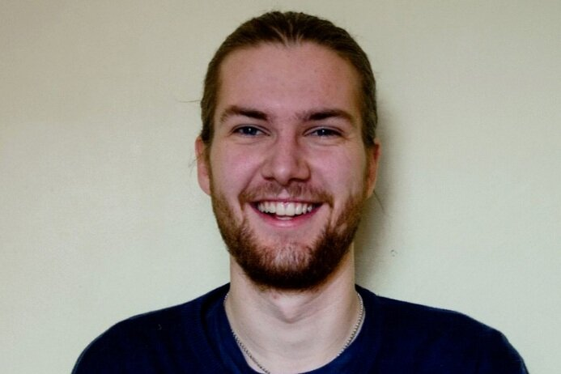
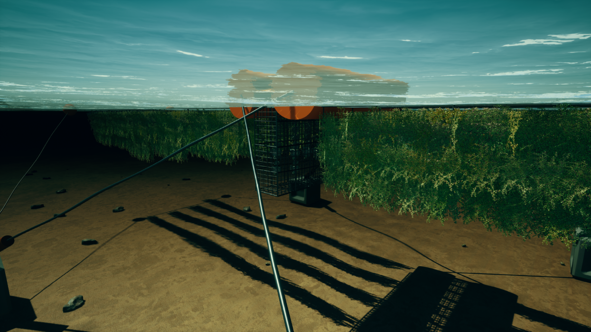

Frej Gustafsson is the co-founder of ReShore, a start-up designing a living breakwater that uses a combination of traditional breakwater technology with mussel and kelp cultivation. The team is seeking to redefine infrastructure and restoration investment and is paving the way to creating a more sustainable blue economy.
In this edited conversation with Peter Green, Frej spoke about his plans for the future, mentioned some of the challenges in building hard-tech start-ups and gave some advice for founders in climate-tech.

How has ReShore got to where it is now?
I met my co-founder Mitch during our studies at Wageningen University in the Netherlands. It was here that we decided to combine my background in marine science with Mitch's background in economics to create a business. The initial idea for ReShore stemmed from our interest in developing the aquaculture industry. We started by looking at delivering ecosystem services which eventually led us to some seaweed ideas thanks, in part, to my prior interest in the space. Eventually we asked ourselves the following question: can we combine traditional engineering with nature to create a nature-inclusive platform that might also incorporate aquaculture? After tinkering with the concept of artificial reefs we settled on a floating system made from traditional breakwater technology fused with mussel and kelp cultivation. We decided to apply to a couple of competitions with this idea which went really well and the idea for ReShore was born.

What challenges have you faced as a founder of a start-up in this space?
A couple of challenges stand out. Firstly, it can be a challenge to find experienced engineers for the team due to the nature of start-ups. Despite this, the maritime infrastructure space is great because there are a lot of people out there willing to help. As a result, we've ended up with plenty of different advisors who are excellent.
The second challenge relates to developing a strategy to get to market. This can be a difficult problem for hardware and marine start-ups. Despite our strategy becoming much clearer recently, it remains an interesting topic. We've addressed this in part by becoming more opportunistic as entrepreneurs. As a result, if we see an opportunity to progress our business, we take it. Thanks to our progress in this area it now looks like we can get to market a lot faster than we first anticipated. Adapting well and being optimistic are really important attributes to foster.

What stage are you at with your product so far?
In relation to technology readiness level (TRL) we're sitting around a four or five. At this point we need to go through the hoops of proof of concept and burden of proof. In maritime infrastructure, burden of proof is very high and numerical modelling is a critical part of that. If we can prove what we're doing numerically, there's a very good chance we can put our product on water.
What's your take on the seaweed industry and where do you think it's going at the moment?
It's very hot right now despite the science still not being 100% in areas such as carbon sequestration. We need to be wary of that. Otherwise there's a lot to capitalise on and for good reason. When it comes to growing seaweed in the West there is plenty of work to be done and we need to figure out a way to make the harvesting process profitable.

What are your team focussing on most at the moment?
Right now we're mainly focussed on the technicals. That's because we know the first market we will target already buys floating breakwaters. For that market we are continually searching for early-adopters. We've interviewed the likes of harbour masters and port managers and often receive positive feedback.
What's next for ReShore?
At the end of this month we are doing scale-model testing. This will involve testing a one-to-fifteen scale prototype in the BASINS of The Maritime Research Institute in the Netherlands (MARIN). After that we have been allocated a grant from the Dutch Research Council and MARIN, which we will use to do a lot of technical work. This will involve seeking to improve the design through numerical models. We've also just been accepted into the StartLife accelerator which will help us scale before a round of fundraising in early 2022.
The first and most important piece of advice I would give to someone pursuing a career in entrepreneurship is taking the first step.
Secondly, remember that there plenty of people in the sustainability space who are willing to help. Simply asking for help from those who know a lot more than you is very useful. This is especially true if you're getting into the maritime industry, where knowing and understanding the regulations that you'll have to deal with is critical. Even with seaweed, getting the permits for growing in places like the UK can be a nightmare.
What books might you recommend to someone who's trying to build ventures in this space?
"Eat Like a Fish" by Bren Smith is a great book. Right now I'm reading a book by Yvon Chouinard, who's the founder of Patagonia, the clothing company. This is great because you get to understand his philosophies, how he thinks about business and how he treats his employees.

Interviewer: Peter Green